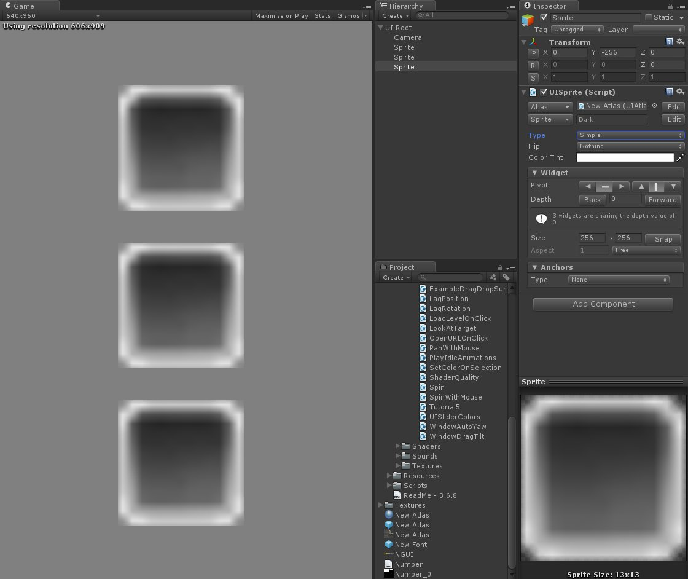
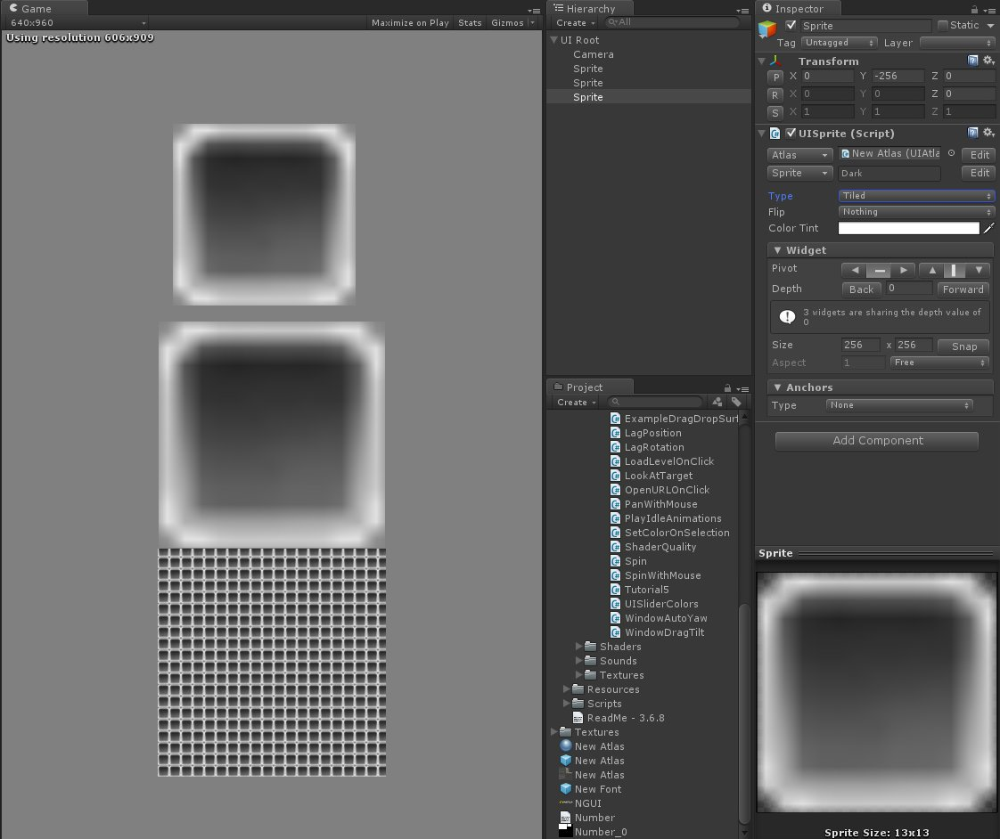
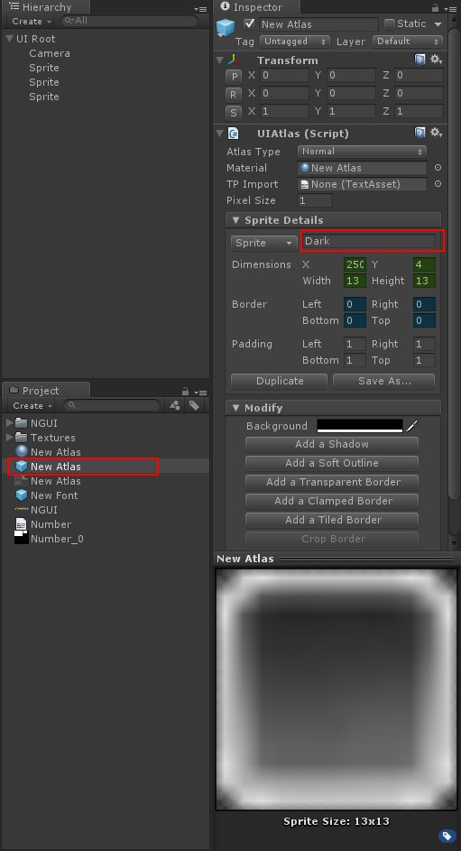
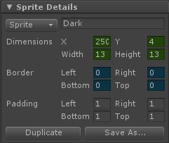
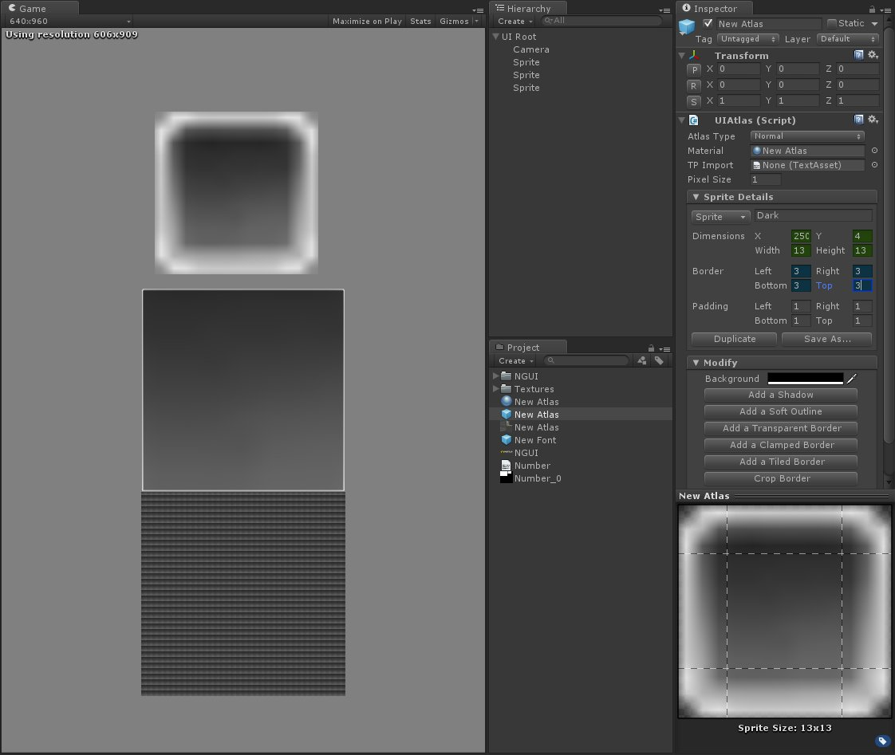
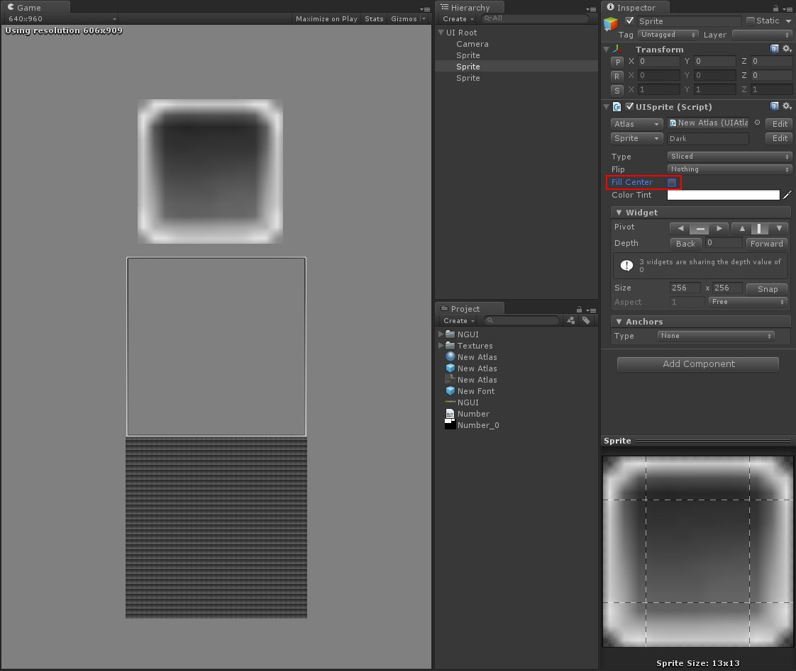

在前面幾篇中都有提到如何創建 UISprite
但沒有對它多做說明
所以這篇來講解 UISprite 的應用方式
首先我們先新增三個同樣的圖片到場景中
可以看到在預設的情況下
UISprit 中的 Type 欄位為 Simple

可以看到圖片的原始解析度為 13 x 13
但我刻意將 UISprit 中的 Size 欄位調整為 256 x 256
顯現出來的結果非常不理想
接下來將三個圖片的 Type 依序調整為 Simple、Sliced、Tiled

我們先來看看調整為 Tiled 的情況
圖片會保持原始解析度顯示 ( 13 x 13 )
多餘的位置則會依序顯示圖片
例如：256 / 13 = 19.6923….
所以顯示出來的圖片會產生19.69個相同圖片
而再來比較 Sliced 跟 Simple
乍看之下兩者並沒有什麼差別
差別只在於 Sliced 圖片比 Simple 大了一點
不過我們來到 Project 中找到使用的圖集
選擇該圖片

這裡可以看到在 Sprite Details 選項中
有 Dimensions、Border、Padding 三個不同的欄位

這裡的單位都是 Pixel
Dimensions：這張圖片在圖集中所包含的位置資料
Border：設定圖片的邊緣
Padding：圖片的留白程度
將 Border 欄位輸入適當參數後
可以發現 Border 的用處就是將邊緣的 Pixel 單位固定
顯示結果為

也可以試試將 UISprite 中的 Fill Center 選項取消
這種情況下圖片只會顯示出邊緣所包含的 Pixel

使用這種方法
可以在某些限定條件下
利用解析度較小的圖產生大圖
以降低遊戲中的記憶體用量